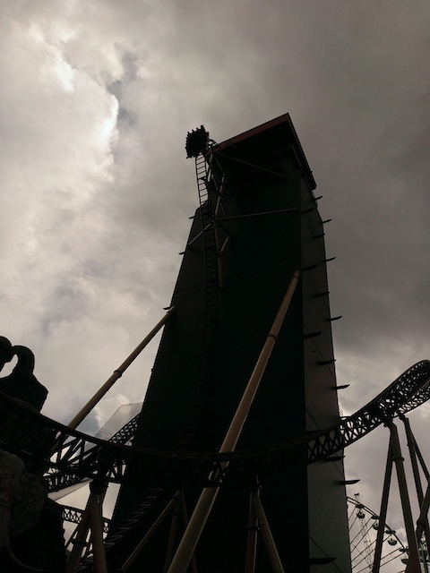
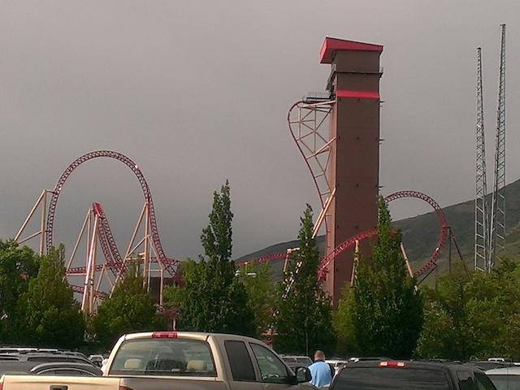

| |
Cannibal Review

We're here at Lagoon, and we're going to be reviewing the park's newest coaster, Cannibal. And man. This ride is freaking GOOD!!! I mean, you just walk up to this ride and it is INTIMIDATING. It just towers over everything, and yet, it doesn't stick out like a sore thumb and blends in with the rest of Lagoon beautifally. So with that said, let's stop talking and ride. We get in the cars, pull down the spatula restraints, the curtain rises, and we are off. We enter into the tower and go around a turn in the dark. Well, not the complete dark as you can still see a cool statue. And then we stop. And we begin to rise. Yep, that's right. Cannibal has an elevator lifthill. And much like on the Intamin Water Coaster, Divertical, you can feel the laterals. They don't feel intense or anything, but I still find it to be really cool. I always enjoy these elevator lifthills. And with all that said, the elevator slowly comes to a stop, and the door opens. HOLY SH*T!!! WE ARE HIGH UP!!! We creep along some straight track to the edge of the drop. You get a good view of the 15 freeway and if you look really closely, you'll actually be able to see the Great Salt Lake. But yeah!! There's supposed to be a drop, but all I see is a little bit of straight track off an edge. Oh boy. We stop. Just sitting, waiting, and then, we are released. We drop, and we don't just drop down vertical, we actually start to flip and go beyond vertical, reaching out at 120 degrees. Now, the beyond vertical portion is braked, so there's no crazy airtime going down, but it is a BIG drop, and we gain A LOT of speed!!! We just continue to fall until we level out and blast through a tunnel. We don't even have time to scream "TAKE THE--" we're already out of the tunnel and rising into that huge immelmann loop we were looking at earlier. It's not really intense, but you know what? It's just a ton of fun. We get a lot of hangtime as we look down on Lagoon upsidedown, before flipping back rightside up as we fall back down towards the ground. We then head into a Dive Loop, and it's essentially the exact same thing. Just soar up into it, get a little hangtime as we float upsidedown, and then flip back down to the ground and gain some speed. Well, not exactly to the ground. We fall close to the ground, and then head down a small little dip afterwards. Doesn't really mean anything as there are trims at the bottom. But still!! It's a lot of fun. We then head into an overbanked turn. It's a lot of fun and all, but there is a little bit of a controversy with this element in the roller coaster enthusiast community. Some people are actually calling this an inversion. Really? It's clearly not an inversion. But hey, these are the same people who also call the Inclined Dive Loop on Hydra and the Stengal Dive on Outlaw Run as inversions. Whatever, you wanna call it an inversion? Have at it. Let's just go back to Cannibal and keep having fun. We head around a curved hill and rise up into the midcourse brakes. Hey, if you look up, the top of the Dive Loop is right above us. Too bad the ride can't duel with a train there. But hey. Whatever. We head around a banked turn and transition into a Zero G Roll. WEE!!! Love these things. And it looks like this is a Double Barrel Roll. Hey!!! Wait a minute. What the hell is going on here? The second barrel roll is in the opposite direction!!! F*CK!!!! We head in the second barrel roll and get some laterals from the directional change. This is actually something called a Lagoon Roll, since they invented it and built the ride themselves. All I know is that I love it. =) We then head into half a downward helix. It's not intense or anything, but it's fun and it does give us some speed. After half of that helix, we switch directions, get a couple laterals, and head into a downward helix to the ground. Now, there's actually a waterfall off the side of the tower where the elevator lifthill is and you just might get wet from that during the helix. Not soaking wet or anything, but you're very likely to get peed on by the waterfall. So it's like a gentle misting. Oh, and there's actually a rock tunnel in the middle of the helix. OH BOY!!!! We get to TAKE THE TUNNEL!!!! We head straight into a building, and glide right into the brake run. While Cannibal wasn't nearly as crazy as I was hoping it would be, it's just a really fun ride. Honestly, it kind of reminds me of the big B&Ms. It's big, very gracious, goes through some big swooping inversions. But it still has some stuff that makes it stand out. Like the huge drop. I love those Eurofighter Drops and this one is especially good. And the Lagoon Roll, that is just one of the coolest elements ever. You may not go insane on this ride, but you will certainly have a good time. Definetly ride it when visiting the park.
9/10
Location: Lagoon
Opened: 2015
Built by: Lagoon
Last Ridden: September 19, 2020
Cannibal Photos






Home
|